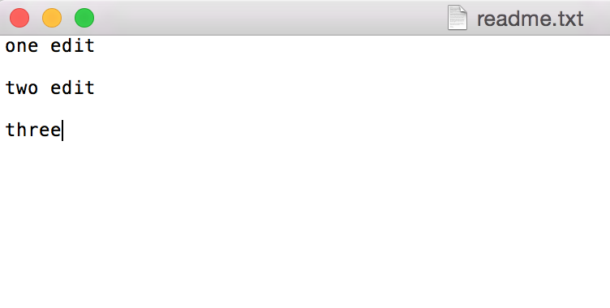

|
这里引用一下百度百科里Git的内容：  Git --- The stupid content tracker, 傻瓜内容跟踪器。Linus Torvalds 是这样给我们介绍 Git 的。
怎样安装Git这里不作介绍，请自行百度，谢谢。
8、Git管理软件
以下例子在终端操作，我们先创建一个名为“TestGit”的文件夹： $ mkdir TestGit
$ cd TestGit/ $ git init 你会看见“Initialized empty Git repository in /Users/baijiawei/Desktop/TestGit/.git/”，提示创建的是一个空的仓库。
在当前目录下，创建文件“readme.txt”，内容为"one edit"，如下图：
另外，在终端使用ls命令，可以查看当前目录下的所有文件： $ ls readme.txt
使用pwd命令可以看见当前所在的目录结构： $ pwd /Users/这个不能让你们知道/Desktop/TestGit
回归正题，使用命令 $ git add readme.txt 执行完成后不会有任何提示，说明添加成功。
最后使用git commit命令提交到仓库： $ git commit -m "first commit" [master (root-commit) dc09f1d] first commit 1 file changed, 1 insertion(+) create mode 100644 readme.txt
执行完命令后会告诉你这次提交的结果。
我们修改一下readme.txt的内容，如下图：
$ git status
On branch master
Changes not staged for commit:
(use "git add <file>..." to update what will be committed)
(use "git checkout -- <file>..." to discard changes in working directory)
modified: readme.txt
结果告诉我们，readme.txt被修改过了，但还没有提交修改。
使用git diff命令，查看文件具体的修改： $ git diff readme.txt diff --git a/readme.txt b/readme.txt index 4f1b13a..8794b68 100644 --- a/readme.txt +++ b/readme.txt @@ -1 +1,3 @@ -one edit \ No newline at end of file +one edit + +two edit \ No newline at end of file
使用add和commit命令把修改提交到Git仓库： $ git add readme.txt $ git commit -m "two edit" [master 299e07a] two edit 2 files changed, 3 insertions(+), 1 deletion(-) create mode 100644 .DS_Store
我们可以使用git log命令查看提交的记录： $ git log
commit 299e07a39e547e1b48f3fc657daa7e6d4ecbf6f4
Author: GarveyCalvin <1147626297@qq.com>
Date: Sat Jan 17 17:25:17 2015 +0800
two edit
commit dc09f1df94afd30bca6726e9f0d3459e358ac560
Author: GarveyCalvin <1147626297@qq.com>
Date: Sat Jan 17 17:11:31 2015 +0800
first commit
从查询结果我们可以看见，我刚刚总共提交了2次到Git仓库。我们还可以看见，commit后面有一串很长的数字，那是每次提交至Git版本库都会随机生成的一串ID（哈希算法），用作版本号，后面我们会使用到。提示：每一个版本号都是随机且是不同
我们还可以把记录内容显示压缩为一行，在后面添加参数“--pretty=oneline”： $ git log --pretty=oneline 299e07a39e547e1b48f3fc657daa7e6d4ecbf6f4 two edit dc09f1df94afd30bca6726e9f0d3459e358ac560 first commit
先来回忆一下，最后修改的readme.txt文件内容如下图所示： 我们把它回退一个版本，也就是只有“one edit”内容的readme.txt文件。
使用git reset命令进行版本回退： $ git reset --hard HEAD^ HEAD is now at dc09f1d first commit 在Git中，
我们看一下回退后的readme.txt文件内容： 可以看出来，我们已经回退了一个版本。
现在使用git log命令查看一下： $ git log
commit dc09f1df94afd30bca6726e9f0d3459e358ac560
Author: GarveyCalvin <1147626297@qq.com>
Date: Sat Jan 17 17:11:31 2015 +0800
first commit
从log命令查看的结果中发现，最新的那个版本已经看不到了，那我们还能回到最新的版本吗？
方法是有的，前面我们介绍了Git的版本号，我们就是使用它来进行回到最新的版本： $ git reset --hard 299e07a39e54 HEAD is now at 299e07a two edit 我们一般不需要把一整串版本号写上去，只需要打前面的几位即可，Git会自己进行查找。但也不要只打前面1－2位，因为这样有可能找到重复的。
我们再次查看readme.txt文件内容：
我们再使用git log来看一下提交至Git仓库的记录： $ git log
commit 299e07a39e547e1b48f3fc657daa7e6d4ecbf6f4
Author: GarveyCalvin <1147626297@qq.com>
Date: Sat Jan 17 17:25:17 2015 +0800
two edit
commit dc09f1df94afd30bca6726e9f0d3459e358ac560
Author: GarveyCalvin <1147626297@qq.com>
Date: Sat Jan 17 17:11:31 2015 +0800
first commit
那么，如果我们当初回退了版本之后，并关闭了终端。没过一会儿，你后悔了，需要回到最新的那个版本怎么办？幸好，在Git中是可以有后悔药吃的，我们可以使用git reflog命令回到未来： $ git reflog
299e07a HEAD@{0}: reset: moving to 299e07a39e54
dc09f1d HEAD@{1}: reset: moving to HEAD^
299e07a HEAD@{2}: commit: two edit
dc09f1d HEAD@{3}: commit (initial): first commit
有了版本号ID，你就可以使用回到未来了。
这里先说一下，Git有工作区和暂存区。工作区就是我们肉眼能看到的目录，暂存区存放的是修改的记录。我们前面的git add命令就是把文件添加到暂存区，git commit命令就是提交暂存区的所有修改：
比如我们现在把readme.txt文件稍作修改，添加多一行文字，如下图所示： 
使用git add命令把readme.txt文件添加到暂存区： $ git add readme.txt
我们再修改readme.txt文件的内容为：
最后使用git commit命令将暂存区提交所有修改： $ git commit -m "three edit" [master 5308250] three edit 1 file changed, 3 insertions(+), 1 deletion(-)
使用git status命令查看一下Git仓库的状态： $ git status
On branch master
Changes not staged for commit:
(use "git add <file>..." to update what will be committed)
(use "git checkout -- <file>..." to discard changes in working directory)
modified: readme.txt
no changes added to commit (use "git add" and/or "git commit -a")
提示有文件修改了没添加至暂存区，为什么呢？我们刚刚不是把readme.txt文件添加到暂存区了吗？ 我们先回想一下刚刚添加的步骤： 1.修改readme.txt文件 2.把readme.txt文件添加到暂存区 3.再次修改readme.txt文件 4.提交到Git仓库 我们是把第一次修改readme.txt文件时添加到暂存区中，因此暂存区只存放了我们的第一次修改记录，而第二次修改后我们没及时把readme.txt文件添加到暂存区，因此提交时只会把暂存区记录的第一次修改提交到Git仓库。
不相信？我们可以使用git diff命令查看本地和最新版本里readme.txt文件的区别： $ git diff readme.txt diff --git a/readme.txt b/readme.txt index 60f01b0..f469ed7 100644 --- a/readme.txt +++ b/readme.txt @@ -2,4 +2,4 @@ one edit two edit -three \ No newline at end of file +four \ No newline at end of file 可见，第二次修改是没有被提交到Git仓库里的。
如果你的当前仓库状态没有任何修改，那么仓库状态应为： $ git status On branch master nothing to commit, working directory clean
我们把readme.txt文件修改为如下内容：
我们先使用git status查看一下状态： $ git status
On branch master
Changes not staged for commit:
(use "git add <file>..." to update what will be committed)
(use "git checkout -- <file>..." to discard changes in working directory)
modified: readme.txt
no changes added to commit (use "git add" and/or "git commit -a")
有一句提示是，使用git checkout -- <file>撤消对工作区的修改。
好了，我突然间不想改这个文件了，我需要复原。那么可以使用git checkout -- file撤消对工作区的修改： $ git checkout -- readme.txt
再次打开readme.txt文件查看内容： 果然，readme.txt已经复原了。提示：git checkout -- <file>命令是把文件回到最近一次
我们再次添加一些无用的内容，并把文件添加至暂存区：
使用git status命令查看当前的状态： $ git status
On branch master
Changes to be committed:
(use "git reset HEAD <file>..." to unstage)
modified: readme.txt
有一句提示为，使用git reset HEAD <file>可以把该文件在暂存区的修改撤消掉。
回到正题，刚改的内容我不想提交到Git仓库，我们可以使用git reset HEAD <file>把暂存区的修改撤消，把该文件的修改全部放回到工作区中： $ git reset HEAD readme.txt Unstaged changes after reset: M readme.txt
现在再使用git status命令查看当前状态： $ git status
On branch master
Changes not staged for commit:
(use "git add <file>..." to update what will be committed)
(use "git checkout -- <file>..." to discard changes in working directory)
modified: readme.txt
no changes added to commit (use "git add" and/or "git commit -a")
我们先增加一个“git.txt”文件，然后把它提交上Git仓库： $ git add git.txt baijiawei-de-mac:TestGit baijiawei$ git commit -m "add git.txt" [master e7a8c02] add git.txt 1 file changed, 5 insertions(+) create mode 100644 git.txt
现在，我们把“git.txt”删除，删除后使用git status命令查看一下状态： $ git status
On branch master
Changes not staged for commit:
(use "git add/rm <file>..." to update what will be committed)
(use "git checkout -- <file>..." to discard changes in working directory)
deleted: git.txt
no changes added to commit (use "git add" and/or "git commit -a")
git会告诉你删除了“git.txt”文件，但还没提交。
情况一：使用git rm命令删除“git.txt”命令并提交： $ git rm git.txt rm 'git.txt' $ git commit -m "delegate git.txt" [master 8652eea] delegate git.txt 1 file changed, 5 deletions(-) delete mode 100644 git.txt
情况二：删除错了文件，想要复原： $ git checkout -- git.txt $ ls git.txt readme.txt 很多时候我们修改错了文件，都可以使用git checkout命令进行复原。
我们现在新建test分支，并切换至test分支： $ git branch test $ git checkout test Switched to branch 'test' 或： $ git checkout -b test Switched to a new branch 'test' 使用git checkout命令加上-b参数，表示新建并切换至分支。
使用git branch命令查看所有分支： $ git branch master * test 其中*号后面的就是当前所在分支。
这个分支可以正常使用了，我们修改一下readme.txt的内容： 然后提交： $ git add readme.txt $ git commit -m "add New Num" [test 6f9e769] add New Num 1 file changed, 3 insertions(+), 1 deletion(-)
我们现在切换到master分支： $ git checkout master Switched to branch 'master'
再看一下readme.txt文件： 刚刚新增的一行内容已经不见了，因为我们刚刚提交的是test分支，master分支是没有提交的。
我们现在把它们合并一下： $ git merge test Updating c684781..6f9e769 Fast-forward readme.txt | 4 +++- 1 file changed, 3 insertions(+), 1 deletion(-) 显示快速合并，因为不存在冲突，因此直接合并就可以了，后面会说到发生冲突时的情况。
合并后我们再看一下readme.txt文件： 内容已经合并完成了。
我们现在可以把test分支删除： $ git branch -d test Deleted branch test (was 6f9e769). 在git branch命令后面加上-d参数，表示删除分支。
我们使用git branch命令查看所有分支： $ git branch * master 现在就只剩下master这个分支了。
往往进行合并时都不会那么顺心，往往会发生冲突。 我们现在创建branchTest分支： $ git checkout -b branchTest Switched to a new branch 'branchTest'
修改readme.txt文件：
在branchTest分支上提交： $ git add readme.txt $ git commit -m "I like here" [branchTest f1dc9cb] I like here 1 file changed, 1 insertion(+), 1 deletion(-)
切换至master分支： $ git checkout master Switched to branch 'master'
修改readme.txt文件：
然后在master分支提交： $ git add readme.txt $ git commit -m "I don't like here" [master 87ef579] I don't like here 1 file changed, 1 insertion(+), 1 deletion(-)
我们尝试一下使用git merge合并分支： $ git merge branchTest Auto-merging readme.txt CONFLICT (content): Merge conflict in readme.txt Automatic merge failed; fix conflicts and then commit the result. 果然，Git提示我们有错误发生（冲突）。它自己不能完成合并，我们需要手动解决冲突。
我们也可以使用git status命令查看冲突的文件： $ git status
On branch master
You have unmerged paths.
(fix conflicts and run "git commit")
Unmerged paths:
(use "git add <file>..." to mark resolution)
both modified: readme.txt
no changes added to commit (use "git add" and/or "git commit -a")
我们查看readme.txt文件： Git用<<<<<<<、=======、>>>>>>>表示不同分支的内容。
我们把readme.txt文件内容改成如下图所示：
提交修改： $ git add readme.txt $ git commit -m "finish merge" [master 1bb3712] finish merge
我们可以使用git log命令查看分支的合并情况： $ git log --graph * commit 1bb37128048d172cfe928fff96f68578b7c6f933 |\ Merge: 87ef579 f1dc9cb | | Author: GarveyCalvin <1147626297@qq.com> | | Date: Sun Jan 18 23:28:12 2015 +0800 | | | | finish merge | | | * commit f1dc9cb9e2f387b35fe323b67bf6d49eeae00ea8 | | Author: GarveyCalvin <1147626297@qq.com> | | Date: Sun Jan 18 23:16:09 2015 +0800 | | | | I like here | | * | commit 87ef57980131541f82216b7359ca7beb50c65010 |/ Author: GarveyCalvin <1147626297@qq.com> | Date: Sun Jan 18 23:19:25 2015 +0800 | | I don't like here | * commit 6f9e769ac382f77001b29bd8b2d3b92054390c3e | Author: GarveyCalvin <1147626297@qq.com> | Date: Sun Jan 18 22:55:52 2015 +0800 | 使用--graph参数可以查看分支的合并图。大家是否觉得显示的内容太多了？你们可以尝试在后面添加--pretty=oneline --abbrev-commit参数，添加后再查看，你会发现结果简洁了许多。
现在我们可以删除branchTest分支了： $ git branch -d branchTest Deleted branch branchTest (was f1dc9cb).
在合并分支时，如果Git能够快速合并（Fast-forward），那么它会直接执行合并（merge）操作。但是，使用它来进行合并（merge），合并（merge）并删除分支后，会丢失分支信息，这样不利于我们日后查看。 因此，我们一般会禁用快速合并（Fast-forward）功能，Git会在合并（merge）时提交一个新的Commit，这样，我们就能从历史上看到分支的信息。 Git merge命令后加上--no-ff就是禁用快速合并（Fast-forward）功能。
我们先建立并切换到一个新分支test： $ git checkout -b test Switched to a new branch 'test'
修改并提交readme.txt文件： $ git add readme.txt $ git commit -m "hello world" [test 4a06fc6] hello world 1 file changed, 2 insertions(+)
提交完后切换回master分支： $ git checkout master Switched to branch 'master'
合并test分支： $ git merge --no-ff -m "merge test" test Merge made by the 'recursive' strategy. readme.txt | 2 ++ 1 file changed, 2 insertions(+) --no-ff参数表示禁用快速合并（Fast-forward），因为这次是合并并提交，因此需要加上-m参数备注分支。
合并后查看日志记录： $ git log --graph --pretty=oneline --abbrev-commit * 2b7a3a0 merge test now |\ | * 561f8b3 edit readme |/ 通过禁用快速合并（Fast-forward），我们可以从日志里清晰看到曾经做过合并。这是快速合并所做不到的。
为了更清晰地展现两者间的区别，我刚刚又做了一个快速合并（Fast-forward）的操作： $ git log --graph --pretty=oneline --abbrev-commit * 6e84f57 error * 2b7a3a0 merge test now |\ | * 561f8b3 edit readme |/ 从历史上我们可以看到，如果是直接使用快速合并（Fast-forward），我们在历史上就只能看到分支提交的Commit，但并不知道是从test分支上合并的; 但如果使用--no-ff参数禁用快速合并（Fast-forward），那么我们就能从历史上清晰看到是与哪个分支合并。
有时候，我们想要创建一个临时分支，用来修复一些紧急问题或者是突如其来的任务变更，这些谁也说不准。
在你工作没完成的时候，突然测试人员走过来跟你说，有一个很紧急的BUG需要修复。这时候你不得不抛下目前的工作去完成他指派给你的BUG，但是，你手头上还有工作没完成，只完成了一部分： $ git status
On branch master
Changes not staged for commit:
(use "git add <file>..." to update what will be committed)
(use "git checkout -- <file>..." to discard changes in working directory)
modified: readme.txt
no changes added to commit (use "git add" and/or "git commit -a")
那么，这个时候我们可以使用git stash命令，把当前工作区的内容存储起来，日后继续工作的时候可以把它恢复： $ git stash Saved working directory and index state WIP on master: 6e84f57 error HEAD is now at 6e84f57 error $ git status On branch master nothing to commit, working directory clean
使用git status验证工作区是否是干净的： $ git status On branch master nothing to commit, working directory clean 从结果看出工作区是干净的。
比如现在我们要修复一个BUG，它的ID为4293－1，我们先创建并切换到新分支： $ git checkout -b bug-4293-1 Switched to a new branch 'bug-4293-1'
假设我们已经完成了BUG修复，提交到Git： $ git add readme.txt $ git commit -m "fix bug" [bug-4293-1 d82ca8f] fix bug 1 file changed, 1 insertion(+), 1 deletion(-)
切换到master分支，合并bug-4293-1分支，最后删除bug-4293-1分支： $ git checkout master Switched to branch 'master' $ git merge --no-ff -m "merge fix bug" bug-4293-1 Merge made by the 'recursive' strategy. readme.txt | 2 +- 1 file changed, 1 insertion(+), 1 deletion(-) $ git branch -D bug-4293-1 Deleted branch bug-4293-1 (was d82ca8f).
那么该回到之前的工作区上工作了，我们可以使用git stash list查看存储的工作区列表： $ git stash list
stash@{0}: WIP on master: 6e84f57 error
使用git stash apply恢复： $ git stash apply Auto-merging readme.txt CONFLICT (content): Merge conflict in readme.txt 现在，工作区的文件已经全部恢复了。
最后把存储的工作区删除掉： $ git stash drop stash@{0}
Dropped stash@{0} (783bdbe7bc4cfff89709dd273fd7b469a9041277)
现在已经把存储的工作区给删除了。现在恢复和删除是分两步的操作，我们还可以把它们合并为一步，也就是恢复并且删除，我们可以使用git stash pop命令。
现在使用git stash list命令已经查看不到有存储的工作区了： $ git stash list
使用git tag <name>命令打标签： $ git tag v1.0.0
使用git tag命令可以查看所有标签： $ git tag v1.0.0
使用git tag show <name>命令可以查看标签信息： $ git show v1.0.0
commit 9e53375e4a84bde213aa2a8d5c77adc251ca1503
Author: GarveyCalvin <1147626297@qq.com>
Date: Tue Jan 20 11:16:58 2015 +0800
formal
...
如果是已提交但忘记打标签的情况下，可以找到当时提交的ID，然后针对ID打标签： $ git log --pretty=oneline 7d5e44602cd32284782ea401dd8c2481fc12ca94 add tag 9e53375e4a84bde213aa2a8d5c77adc251ca1503 formal ce809c52cb944e679f099ddf2d07e92469a25d53 merge fix bug d82ca8f16ee7237bdafede1cc709a2d520137c18 fix bug 6e84f5775b0df132f4a737d7281eb0900d1de878 error 2b7a3a07c991a6a5ed4a28bc863d5211336ad96e merge test now 561f8b385bd03e8294fba643289c105de6ffc3df edit readme ec1ffe29f87da4304abf964e7629dc671c3a59b1 test 87ef57980131541f82216b7359ca7beb50c65010 I don't like here 6f9e769ac382f77001b29bd8b2d3b92054390c3e add New Num c6847813d853e7e70739a55df487407314b7ee30 three edit new 5308250b75470b5754eca360d43a03c74820d4de three edit 299e07a39e547e1b48f3fc657daa7e6d4ecbf6f4 two edit dc09f1df94afd30bca6726e9f0d3459e358ac560 first commit
比如在merge test now提交的那一次打标签，对应的ID是“2b7a3a07c”： $ git tag v0.1.0 2b7a3a07c
使用git tag看一下当前所有的标签： $ git tag v0.1.0 v1.0.0 可以看到我们刚刚新打的标签v0.1.0。
再查询v0.0.1标签的信息： $ git show v0.1.0
commit 2b7a3a07c991a6a5ed4a28bc863d5211336ad96e
Merge: ec1ffe2 561f8b3
Author: GarveyCalvin <1147626297@qq.com>
Date: Mon Jan 19 10:21:26 2015 +0800
merge test now
可以看到，标签已经打在了merge test now这次提交上。
我们还可以创建有说明的标签，用 $ git tag -a v2.0.0 -m "formal v2.0.0"
查看标签的信息： $ git show v2.0.0
tag v2.0.0
Tagger: GarveyCalvin <1147626297@qq.com>
Date: Tue Jan 20 11:38:10 2015 +0800
formal v2.0.0
commit d5161f9ba613100455a010a3afc312d32a99b68b
Author: GarveyCalvin <1147626297@qq.com>
Date: Tue Jan 20 11:37:28 2015 +0800
detail tag
...
可以看到我们刚刚写的说明“formal v2.0.0”。
使用git tag -d命令删除标签： $ git tag -d v1.0.0 Deleted tag 'v1.0.0' (was 9e53375)
使用git push origin <tagName>推送至远程仓库： $ git push origin v1.0.0 Total 0 (delta 0), reused 0 (delta 0) To https://git.oschina.net/GarveyCalvin/testProject.git * [new tag] v1.0.0 -> v1.0.0
使用git push origin --tags把所有未推送的标签推送到远程仓库： $ git push origin --tags Total 0 (delta 0), reused 0 (delta 0) To https://git.oschina.net/GarveyCalvin/testProject.git * [new tag] v0.0.1 -> v0.0.1 * [new tag] v0.1.0 -> v0.1.0
如果已经推送到远程仓库，现在想要删除的话，首先从本地移除对应的tag： $ git tag -d v0.0.1 Deleted tag 'v0.0.1' (was bc2cb64)
然后在git puh origin命令后面加上:refs/tags/<tag name>删除： $ git push origin :refs/tags/v0.0.1 To https://git.oschina.net/GarveyCalvin/testProject.git - [deleted] v0.0.1 除了这种方法，你也可以自行到远程仓库网站把Tag删除。
在有些时候，我们的Git项目里会有一些特殊的文件，可能是系统自生成的文件，在你每次提交的时候都会提示你有文件改动了，提示你添加这些文件。这样是不是很烦人？因此我们需要忽略这类文件。
比如在Mac系统里，每个文件夹都会生成一个".DS_Store"的隐藏文件，用来存放文件夹的排序等信息，这些文件也会在查看git status时出现，并且它们出现的次数非常多，令人感觉非常烦。你是否有疑惑为什么你看了这篇博文这么久，都没有看到过这些提示，那是因为我没截全部的提示：）。好了，下面就教大家怎样去忽略它。
我们需要在Git工作区的根目录下创建.gitignore文件，在这之前我们先创建一些需要忽略的文件夹： 以上这些文件和文件夹都是需要Git去忽略掉的。
我们先使用git status查看一下状态： $ git status
On branch master
Your branch is up-to-date with 'origin/master'.
Untracked files:
(use "git add <file>..." to include in what will be committed)
.DS_Store
bad/
ignore/
other/
nothing added to commit but untracked files present (use "git add" to track)
没自定义忽略的文件/文件夹前，会把所有改动过的文件/文件夹进行提示。 如果你们没看见有文件夹显示，那是因为你的文件夹下没有文件/文件夹，Git自动会忽略空目录。解决方法很简单，只要在文件夹下添加文件就可以了。
现在我们可以创建.gitignore文件了，文件内容如下所示： # remark *.DS_Store ignore 有#号的那一行都是备注，并没有实质作用。 *.忽略后缀名为……的文件 ignore、other、bad为忽略的文件夹
注意，要把.gitignore文件放到版本库里： $ git add .gitignore
现在我们再使用git status查看一下状态： $ git status
On branch master
Your branch is up-to-date with 'origin/master'.
Changes to be committed:
(use "git reset HEAD <file>..." to unstage)
new file: .gitignore
现在就只能查询到.gitignore文件了，其它需要忽略的文件/文件夹已经被忽略掉。
我们可以像开发那样，自己定义一个关键字类型。 我们查看状态时，一般都是使用git status，如果你想简化成git st，那么：
--global参数表示全局定义，也就是说定义了之后，在当前电脑下的所有Git仓库都通用。如果不想定义为全局，那么把--global参数去掉即可。
以后就可以直接使用git st命令查看状态了： $ git st
On branch master
Your branch is up-to-date with 'origin/master'.
Changes to be committed:
(use "git reset HEAD <file>..." to unstage)
new file: .gitignore
前面我们想要简化git log显示内容时，是否需要输入一大串字符(git log --pretty=oneline --abbrev-commit)？现在我们可以为它创建别名进行简化输入了，并且显示更加强大： git config --global alias.lg "log --color --graph --pretty=format:'%Cred%h%Creset -%C(yellow)%d%Creset %s %Cgreen(%cr) %C(bold blue)<%an>%Creset' --abbrev-commit" 代码片段转自：http://blog.csdn.net/n289950578/article/details/24465663
效果如下：
全局的Git配置文件在用户主目录（Macintosh HD ? Users ? 你的用户名）下的隐藏文件.gitconfig中： 当我们想要取消别名时，只需要把对应的别名行删除即可。如果是定义非全局的Git配置文件，那么它在当前项目的根目录下的.git隐藏文件夹下的config文件。
8、Git管理软件 建立大家使用SourceTree管理Git库，功能强大，界面友好，使用简单，这里就不多作介绍了。
博文作者：GarveyCalvin 博文出处：http://www.cnblogs.com/GarveyCalvin/ 本文版权归作者和博客园共有，欢迎转载，但须保留此段声明，并给出原文链接，谢谢合作！
|
|
|